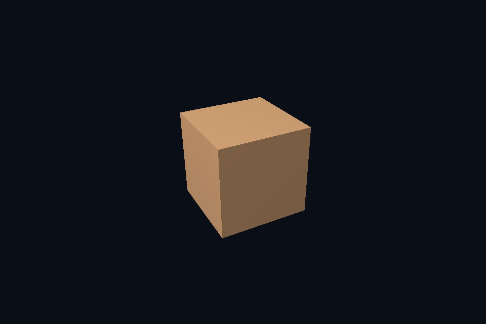

第 11 课 · 图像与 View：限定子资源访问 · Vulkan 原生
54 课目录 · 对照精讲 · 上一课 · 下一课
本课目标与先修
学习目标：解释“图像与 View：限定子资源访问”解决的问题，找到实际对象和参数，运行对应实验并用数据/画面证明。先完成前一课，并能说明它交付的对象与完成条件；本课在该依赖上增加新契约。
为什么需要这一层
资源是存储，view 是解释和访问范围。mip、array layer、aspect 与格式必须与资源创建约束一致。创建一个新的 view 不会产生一份新像素，也不会自动初始化它所指向的内容。
Vulkan 原生 的对象、参数与执行推导
普通交换链 view 指向一张图像的颜色面。扩展实验把可采样纹理的 view 限定到最后一级 mip，观察整体成为近似平均颜色；view 的 baseMipLevel 与 sampler LOD 是相关但不同的范围。
对照 DirectX 12：相同问题的另一种分工
SRV 写入 descriptor heap，描述 MostDetailedMip、MipLevels 与格式。相同 resource 可有不同合法 view；本课程通过限定末级 mip 验证这个区别。RTV/DSV 则服务输出用途，不直接等同于 shader-visible SRV。
关键参数与可检查不变量
先为每项指出源码中的创建/绑定位置，以及证明它成立的实际日志、字节或图像。数值中的设备限制以查询为准；固定实验尺寸不当作所有设备的上限。
nvpro_core2 框架对照
RenderTarget 产生图像和 view，ImTexture 引用供 UI 显示的 view。重建 target 后需要更新引用；旧 view 不会自动指向新分配。
这部分是原生 Vulkan 各课的框架对照，框架可运行入口仍为原有六课。如果本节需要新接入工作，会按正文说明；不把原生实验当作已完成的框架实现。
运行与实际检查
从合集根目录执行；普通图形程序 Esc 退出，设备/计算/诊断程序输出结果后结束。从“开始学习.cmd”进入本页时，表格可直接点击运行。
cmake --preset vulkan-native
cmake --build --preset vulkan-native-debug --target vk41_subresource_view --parallel 4
.\Vulkan\native\build\bin\Debug\vk41_subresource_view.exe
ctest --preset vulkan-native-debug -R "^vk41_subresource_view$" --output-on-failure
检查三个层次：创建/绑定/提交的接口约束；数据读回或目标画面；资源使用结束后的回收。诊断实验用合法信息或查询证明渠道可用，不故意保留 API 错误。图形 smoke 的像素检查与数值实验的逐项检查不同，具体实现见源码。
关键实现：从当前源码定位
来自 Vulkan/native/common/advanced_labs.cpp，第 448—491 行。下列是当前仓库的局部切片，可能在函数中间结束；完整上下文请打开文件，切片不作为单独可编译程序。
void attach(SceneVk& scene, bool lastMip = false) {
if (lastMip) {
VkImageViewCreateInfo ci{VK_STRUCTURE_TYPE_IMAGE_VIEW_CREATE_INFO};
ci.image = image.image;
ci.viewType = VK_IMAGE_VIEW_TYPE_2D;
ci.format = format;
ci.subresourceRange = {
VK_IMAGE_ASPECT_COLOR_BIT, uint32_t(reference.size() - 1), 1, 0, 1};
vkCheck(vkCreateImageView(c.device, &ci, nullptr, &selectedView));
}
VkDescriptorImageInfo info{
sampler, lastMip ? selectedView : image.view, VK_IMAGE_LAYOUT_SHADER_READ_ONLY_OPTIMAL};
VkWriteDescriptorSet write{VK_STRUCTURE_TYPE_WRITE_DESCRIPTOR_SET};
write.dstSet = scene.descriptor;
write.dstBinding = 1;
write.descriptorCount = 1;
write.descriptorType = VK_DESCRIPTOR_TYPE_COMBINED_IMAGE_SAMPLER;
write.pImageInfo = &info;
vkUpdateDescriptorSets(c.device, 1, &write, 0, nullptr);
}
// 逐级复制到可见缓冲并核对每个 texel，避免只检查第一个级别或最终画面。
void verify() {
VkDeviceSize bytes = 0;
std::vector<VkDeviceSize> offsets;
for (const auto& p : reference) {
offsets.push_back(bytes);
bytes += p.rgba.size();
}
VkBufferResource readback;
readback.init(c, bytes, VK_BUFFER_USAGE_TRANSFER_DST_BIT);
immediate(c, [&](VkCommandBuffer cmd) {
for (uint32_t i = 0; i < reference.size(); ++i) {
imageDependency(cmd,
image.image,
i,
VK_IMAGE_LAYOUT_SHADER_READ_ONLY_OPTIMAL,
VK_IMAGE_LAYOUT_TRANSFER_SRC_OPTIMAL,
VK_PIPELINE_STAGE_2_ALL_COMMANDS_BIT,
VK_ACCESS_2_MEMORY_READ_BIT | VK_ACCESS_2_MEMORY_WRITE_BIT,
VK_PIPELINE_STAGE_2_COPY_BIT,
VK_ACCESS_2_TRANSFER_READ_BIT);
VkBufferImageCopy copy{};
copy.bufferOffset = offsets[i];
copy.imageSubresource = {VK_IMAGE_ASPECT_COLOR_BIT, i, 0, 1};
阅读时按“前置对象 → 参数/布局 → 录制/调用 → 完成/可见性 → 释放”五步标注。共享 helper 减少重复代码，但不会取消每课的 API 契约。
受控修改实验
只把 view 的 mip 范围缩到最后一级，为什么资源的总分配大小没有随之缩小？
先记录预测，再只改一个因素；保留基线与修改后的输出。不要同时改变 shader、资源范围和同步，这样即使结果变好也无法归因。
参考推导与通过标准
view 不拥有存储。原始纹理仍有完整 mip 链，只是当前接口暴露其中一段。
常见失败与排查顺序
把 sampler 的 LOD 当作资源绝对 mip 号，会在 view 已偏移 base mip 时再次偏移；先明确相对范围。
先看第一条错误和当前执行路径，再看实际数据/绑定，最后看 shader 与画面。需要 GPU 证据时抓取正常交互帧；仅四帧的 smoke 适合自动检查，不适合手动抓帧。
自测与本课交付
能否不看源码回答：只把 view 的 mip 范围缩到最后一级，为什么资源的总分配大小没有随之缩小？
提交一份简短记录：输入与假设、唯一修改、预期、实际证据、原因、是否恢复基线。如果只能复述函数名而说不清何时允许访问/释放，先回到本课的数据流。
官方阅读位置与当前工程差异
指定 Vulkan 教程对应位置。DX12 路线按同一概念顺序建立映射，其对象与约束以 Microsoft 文档和本后端代码为准。49—54 课包含在基础/compute 之后加入的工程扩展。
版本与资料说明 · 调试 · 功能完成度
固定输入的实际 GPU 读回
